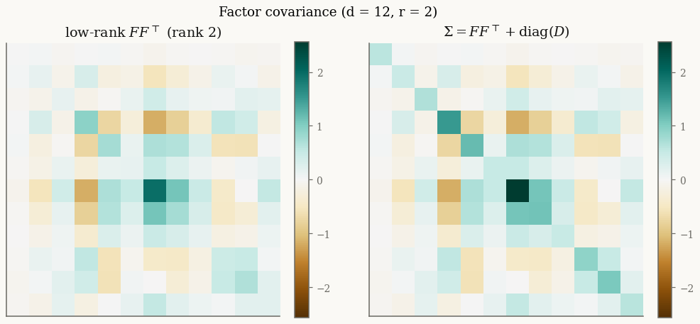

Factor variants#
Every mixture in this gallery has a factor-analysis sibling that replaces the dense covariance with a low-rank-plus-diagonal structure
This cuts the dispersion cost from \(d(d+1)/2\) parameters to \(d\,r + d\) and keeps
every solve \(O(d r^2)\) via the Woodbury identity — the practical choice when
\(d\) is large (many assets, many features). The four variants —
FactorVarianceGamma, FactorNormalInverseGamma, FactorNormalInverseGaussian,
and FactorGeneralizedHyperbolic — mirror their full-\(\Sigma\) counterparts
exactly, differing only in how \(\Sigma\) is stored.
The covariance structure#
A rank-\(r\) block \(F F^\top\) captures the dominant correlations; the diagonal \(D\) supplies asset-specific idiosyncratic variance and keeps \(\Sigma\) full-rank.

Parametrizations#
Built from the shared location/shape block, the factor covariance, and the family’s own subordinator parameters:
Symbol |
Attribute |
Meaning |
|---|---|---|
\(\mu\) |
|
location \((d,)\) |
\(\gamma\) |
|
skewness \((d,)\) |
\(F\) |
|
factor loadings \((d, r)\) |
\(D\) |
|
idiosyncratic variances \((d,)\), positive |
subordinator |
|
Gamma / InverseGamma / InverseGaussian / GIG |
The subordinator keyword arguments to from_classical match the dense
siblings: alpha, beta (VarianceGamma, NormalInverseGamma), mu_ig, lam
(NormalInverseGaussian), or p, a, b (GeneralizedHyperbolic). Note \(F\) is
identifiable only up to an \(r \times r\) rotation, so EM convergence is measured
on \(\Sigma\), not on \(F\).
Quick usage#
print("d / r:", model.d, model.r)
print("mean:", np.asarray(model.mean())[:4], "...")
print("Σ diagonal:", np.asarray(jnp.diag(model.sigma()))[:4], "...")
X = model.rvs(2_000, seed=0)
# default_init takes the factor rank r; fit runs EM with Woodbury linear algebra
result = FactorNormalInverseGaussian.default_init(X, r=2).fit(X, max_iter=50, tol=1e-3)
print("converged:", result.converged, " fitted r:", result.model.r)
d / r: 12 2
mean: [0. 0. 0. 0.] ...
Σ diagonal: [0.583 0.4798 0.6734 1.5116] ...
converged: True fitted r: 2